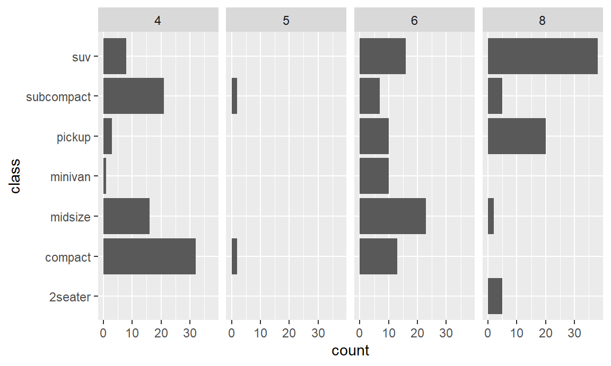

Chapter 5 [Tutorial] Descriptieve statistieken
5.1 Voor je begint
Voordat je aan deze tutorial begint, moet je eerst de pakketten dplyr, tidyr, ggcorrplot, en ggplot2 geïnstalleerd hebben, als je dat nog niet gedaan hebt. Deze kunt u laden met de library functie. Als je sommige nog moet installeren, gebruik dan eerst install.packages.
Daarnaast wil je misschien ook de volgende packages gebruiken. Ze zullen nuttig blijken op een bepaald punt in deze tutorial, maar zijn niet strikt noodzakelijk.
Deze tutorial maakt gebruik van de mpg dataset, die informatie bevat over 234 verschillende auto’s. Het mpg.RDS bestand wordt met deze tutorial meegeleverd.
De dataset bevat de volgende variabelen:12
| Variabele | Beschrijving |
|---|---|
| manufacturer | De fabrikant |
| model | De naam van het model |
| displ | Motorinhoud, in liters |
| year | bouwjaar |
| cyl | Aantal cilinders |
| trans | Type transmissie (koppeling) |
| drv | f = voorwielaandrijving, r = achterwielaandrijving, 4 = 4wd |
| cty | Aantal mijl per gallon brandstof in stadsomgeving |
| hwy | Aantal mijl per gallon brandstof op snelweg |
| fl | Brandstoftype (c,d,e,p,r) |
| class | Type auto (2seater, compact, midsize, minivan, pickup, subcompact, suv) |
5.2 Introductie
Het doel van deze tutorial is om zowel univariate als bivariate analyses uit te voeren met het dplyr package. Verder zullen in een beperkt aantal gevallen de tidyr en ggcorrplot packages. worden gebruikt voor extra ondersteuning.
De univariate analyse wordt uitgevoerd voor zowel categorische als continue variabelen. De bivariate analyse wordt uitgevoerd voor elk van de volgende paren: continu-categorisch, continu-continu en categorisch-categorisch. Naast een numerieke analyse met behulp van functies uit de eerder genoemde pakketten, zullen de analyses vergezeld gaan van passende grafieken gemaakt met ggplot2. Een basiskennis van ggplot2 is vereist.
De tutorial is als volgt opgebouwd:
- Enkele algemene, nuttige dplyr functies
- Univariate analyse van een continue variabele
- Bivariate analyse van een continue variabele vs. een categorische variabele
- Univariate analyse van een categorische variabele
- Bivariate analyse van een continue variabele vs. een andere continue variabele
- Bivariate analyse van een categorische variabele vs. een andere categorische variabele
5.3 Nuttige dplyr functies
Voordat we overgaan tot het analyseren van onze dataset, zijn er een paar handige hulpfuncties in dplyr die we kunnen gebruiken om onze gegevens te verwerken en te analyseren. De eerste is as_tibble.
5.3.1 Tibbles
Gegeven een data.frame df, zal as_tibble(df) het in een tibble veranderen. Een tibble is een speciaal soort data.frame dat gebruikt wordt door dplyr en andere pakketten van het tidyverse.13 Wanneer een data.frame wordt omgezet in een tibble zal de klasse veranderen.
## [1] "data.frame"## [1] "tbl_df" "tbl" "data.frame"Je kunt zien dat het mpg object nu drie verschillende class labels heeft. Het is nog steeds een data.frame, maar een speciaal soort data.frame, namelijk een tibble data.frame.
Het verschil tussen een gewoon data.frame en een tibble data.frame is het meest merkbaar bij het afdrukken van (grote) data.frames. Probeer maar eens de dataset met de volgende twee regels in de console af te drukken.
Merk je het verschil? Bij het afdrukken van een gewoon data.frame, zal een overvloed aan observaties worden afgedrukt in de console. Het resultaat is dat je terug naar boven moet scrollen om de variabelnamen te zien. Erger nog, wanneer de kolommen niet op een enkele pagina passen, zal elke observatie verspreid worden over verschillende lijnen, waardoor de uitvoer onleesbaar wordt.14
Wanneer echter een tibble data.frame wordt afgedrukt, worden standaard alleen de eerste 10 rijen afgedrukt, en variabelen die niet binnen de breedte van de pagina of console passen worden verborgen. Dit maakt de afgedrukte dataset veel leesbaarder en onze console minder rommelig.
Het nadeel van deze aanpak is dat je soms meer waarnemingen of meer variabelen wil zien, zonder je tibble terug in een data.frame te veranderen. Je kunt dit oplossen door expliciet de print functie te gebruiken en de argumenten n en width in te stellen. De volgende regel drukt alle rijen en kolommen af, door beide argumenten op Inf te zetten, wat staat voor oneindig.15 Je kunt ook andere waarden gebruiken om ander aantallen kolommen en rijen te printen. Later zullen we zien hoe we specifieke rijen en kolommen kunnen printen. Merk daarnaast op dat je altijd View() kan gebruiken om de volledige dataset te tonen in een apart Rstudio panel.
#Deze regel wordt hier niet uitgevoerd - je kunt het in de console proberen.
print(mpg, n = Inf, width = Inf)Behalve voor het printen, laten tibbles enkele eenvoudiger manipulaties toe vergeleken met een normaal data.frame als je het pakket tibble installeert. Dit valt echter buiten het bereik van deze tutorial. Verder zal je zien dat de uitvoer van dplyr functies die in de rest van deze tutorial worden besproken automatisch tibbles zijn. Dit betekent dat je vaak niet expliciet as_tibble hoeft te gebruiken. Voor nu is het dus voldoende om het verschil te begrijpen.
5.3.2 Glimpse
Een tweede handige functie is de glimpse functie. Deze functie is het dplyr-alternatief voor de bekende str-functie voor base-R, en is dus nuttig voor een eerste inspectie van de dataset die voorhanden is. Het zal een iets andere output geven dan str, en wordt door sommigen als netter ervaren.
## tibble [234 x 11] (S3: tbl_df/tbl/data.frame)
## $ manufacturer: Factor w/ 15 levels "audi","chevrolet",..: 1 1 1 1 1 1 1 1 1 1 ...
## $ model : Factor w/ 38 levels "4runner 4wd",..: 2 2 2 2 2 2 2 3 3 3 ...
## $ displ : num [1:234] 1.8 1.8 2 2 2.8 2.8 3.1 1.8 1.8 2 ...
## $ year : int [1:234] 1999 1999 2008 2008 1999 1999 2008 1999 1999 2008 ...
## $ cyl : Ord.factor w/ 4 levels "4"<"5"<"6"<"8": 1 1 1 1 3 3 3 1 1 1 ...
## $ trans : Factor w/ 10 levels "auto(av)","auto(l3)",..: 4 9 10 1 4 9 1 9 4 10 ...
## $ drv : Factor w/ 3 levels "4","f","r": 2 2 2 2 2 2 2 1 1 1 ...
## $ cty : int [1:234] 18 21 20 21 16 18 18 18 16 20 ...
## $ hwy : int [1:234] 29 29 31 30 26 26 27 26 25 28 ...
## $ fl : Factor w/ 5 levels "c","d","e","p",..: 4 4 4 4 4 4 4 4 4 4 ...
## $ class : Factor w/ 7 levels "2seater","compact",..: 2 2 2 2 2 2 2 2 2 2 ...## Rows: 234
## Columns: 11
## $ manufacturer <fct> audi, audi, audi, audi, audi, audi, audi, audi, audi, ...
## $ model <fct> a4, a4, a4, a4, a4, a4, a4, a4 quattro, a4 quattro, a4...
## $ displ <dbl> 1.8, 1.8, 2.0, 2.0, 2.8, 2.8, 3.1, 1.8, 1.8, 2.0, 2.0,...
## $ year <int> 1999, 1999, 2008, 2008, 1999, 1999, 2008, 1999, 1999, ...
## $ cyl <ord> 4, 4, 4, 4, 6, 6, 6, 4, 4, 4, 4, 6, 6, 6, 6, 6, 6, 8, ...
## $ trans <fct> auto(l5), manual(m5), manual(m6), auto(av), auto(l5), ...
## $ drv <fct> f, f, f, f, f, f, f, 4, 4, 4, 4, 4, 4, 4, 4, 4, 4, 4, ...
## $ cty <int> 18, 21, 20, 21, 16, 18, 18, 18, 16, 20, 19, 15, 17, 17...
## $ hwy <int> 29, 29, 31, 30, 26, 26, 27, 26, 25, 28, 27, 25, 25, 25...
## $ fl <fct> p, p, p, p, p, p, p, p, p, p, p, p, p, p, p, p, p, p, ...
## $ class <fct> compact, compact, compact, compact, compact, compact, ...5.3.3 %>%
Een andere handige functie is een heel speciale, en heet het piping-symbool.16 Het piping-symbool bestaat uit een groter-dan-teken, voorafgegaan en gevolgd door een %-teken.
Het piping-symbool kan worden gebruikt om verschillende commandos met elkaar te verbinden. Je kunt het vergelijken met leidingen in een waterleidingnet. Binnen een waterzuiveringsstation vervoeren leidingen het water van het ene zuiveringsstation naar het volgende en uiteindelijk naar de huishoudens. Hier gebruiken we het piping-symbool om onze gegevens van de ene manipulatie naar de volgende te brengen. Beschouw dit zeer eenvoudige voorbeeld:
We kunnen deze regel parafraseren als: “Neem het hoofd (d.w.z. de eerste 6 rijen) van de dataset mpg.”
Wanneer we het piping-symbool gebruiken, kan het eerste argument van een functie voor de functie-aanroep worden geplaatst in plaats van erbinnen. De laatste regel code is daarom gelijk aan de volgende regel.17
We kunnen nu zeggen: “We nemen de dataset mpg en nemen dan het hoofd ervan.” Deze zin lijkt natuurlijker, want hij is heel gemakkelijk uit te breiden met de verdere stappen die je gaat nemen.
Zoals leidingen water van de ene plaats naar de volgende brengen in een waterleidingnet, brengt het piping-symbool onze gegevens van de ene plaats naar de volgende, in dit geval de head-functie. Op dit moment lijkt het misschien belachelijk om dit te doen, maar zoals we heel snel zullen zien, komt dit symbool heel goed van pas.
Als ander voorbeeld: merk op dat de volgende twee hypothetische verklaringen zijn gelijkwaardig
En als we twee functies hebben, bv. f en g die we genest hebben aangeroepen, d.w.z. de een binnen de ander, dan kunnen we het volgende doen.
f(g(x,y),z)
# Breng het eerste argument van f naar voren
g(x,y) %>% f(z)
# Breng het eerste argument van g naar voren
x %>% g(y) %>% f(z)Dus, dit commando neemt x, voert functie g uit met argument y en dan wordt het resultaat gegeven aan functie f met tweede argument z. Dit is veel gemakkelijker te lezen dan de originele regel, waar we functie f uitvoerden op het resultaat van functie g op x en y, en z gebruikten als tweede argument voor f.
Echter, dat is genoeg wat betreft abstracte concepten. Het is tijd om iets met onze dataset te doen en dit symbool nuttig te gebruiken.
5.4 Univariate analyse van een continue variabele
We beginnen met een uniforme analyse van continue variabelen. Voorbeelden van continue variabelen zijn leeftijd, afstand, snelheid, gewicht, enz. Voor dit soort variabelen kunnen we het centrulm en de spreiding meten. Maatstaven voor centrum zijn gemiddelde en mediaan. Maatstaven voor spreiding zijn standaardafwijking, kwantielen, min en max, interkwartielafstand en bereik.
Al deze maatstaven hebben één ding gemeen: zij vatten een continue variabele samen door middel van één getal, één waarde. Dit kan worden uitgevoerd met behulp van de summarise functie van dplyr.18
Als voorbeeld, stel dat we het gemiddelde en de standaardafwijking van de cty willen berekenen.
## # A tibble: 1 x 2
## mean_cty st_dev_cty
## <dbl> <dbl>
## 1 16.9 4.26Het eerste argument van summarize is het data argument. Alle volgende argumenten worden nieuwe kolommen in de resulterende tabellen. mean_cty en st_dev_cty zijn de namen van de nieuwe kolommen. Deze namen kan je volledig zelf beslissen. De delen na het =-teken worden de inhoud van de kolommen, d.w.z. het gemiddelde (berekend met de mean functie) en de standaardafwijking (berekend met de sd functie).
In plaats van namen zonder aanhalingstekens te geven (bijv. mean_cty), kan je ook aanhalingstekens toevoegen. Hierdoor kunt u spaties gebruiken. Wanneer je uitvoer definitief is en niet bedoeld is voor verdere manipulatie, zou u dit kunnen doen, om mooie kolomnamen te hebben in je rapport. Bijvoorbeeldmpg %>% summarize("Gemiddelde cty" = mean(cty)). In het algemeen kan je spaties echter beter vermijden.
We kunnen de bovenstaande regel herschrijven door het %>% symbool te gebruiken. Merk op dat na dit symbool, we enter hebben gebruikt, zodat summarize op een nieuwe regel begint, met een inspringing. De inspringing wijst erop dat deze regels eigenlijk één statement vormen (d.w.z. de ene regel kan niet worden uitgevoerd zonder de andere).19
| mean_cty | st_dev_cty |
|---|---|
| 16.86 | 4.256 |
Alle functies die gebruikt worden binnen de summarize functie moeten één en slechts één waarde teruggeven, d.w.z. het gemiddelde, de mediaan, de interkwartielafstand, enz. We noemen deze functies summary-functies. Een (onvolledige) lijst van samenvattende functies is hier opgenomen:
minmaxmeanmedianfirst(eerste element van vector)last(laatste element van vector)n(aantal waarden in een dataset)20nth(n-de waarde van vector)n_distinct(aantal verschillende waarden in vecetor)IQR(interkwartielafstand)var(variantie)sd(standaardafwijking)quantilesum
Merk op dat (behalve n) al deze functies ook gebruikt kunnen worden op normale vectoren, dus niet binnen de summarize functie. Omgekeerd zijn dit niet de enige functies die binnen summarize gebruikt kunnen worden. In het algemeen kunnen alle functies die één enkele waarde teruggeven worden gebruikt. Bovendien kunnen we ook kolommen opnemen waarvan we de waarde handmatig hebben ingesteld. Bijvoorbeeld, we kunnen het laatste voorbeeld bijwerken en opnemen dat we de cty variabele als kolom hebben gebruikt. In dit geval hebben we geen summary-functie nodig, maar alleen een waarde, bijvoorbeeld “cty”.
| variable | mean | st_dev |
|---|---|---|
| cty | 16.86 | 4.256 |
Sommige overzichtsfuncties hebben extra argumenten nodig, zoals de nth functie, die een waarde voor n nodig heeft, en eventueel een ordening kan opgeven. De quantile functie heeft een probs argument nodig, dat staat voor het percentiel. Bijvoorbeeld, om het eerste 10% percentiel te berekenen, stellen we probs = 0.1 in. Hieronder berekenen we bijvoorbeelde de kwintielen van de cty variabele.
mpg %>%
summarize(variable = "cty",
q0.2 = quantile(cty, 0.2),
q0.4 = quantile(cty, 0.4),
q0.6 = quantile(cty, 0.6),
q0.8 = quantile(cty, 0.8)) %>%
pander| variable | q0.2 | q0.4 | q0.6 | q0.8 |
|---|---|---|---|---|
| cty | 13 | 15 | 18 | 20 |
We zien dat 20% van de cty waarden kleiner is dan of gelijk is aan 13, en 20% van de cty waarden groter is dan of gelijk is aan 20. In het laatste blok code hebben we elke variabele op een nieuwe regel gezet. Rstudio zal alle regels automatisch laten inspringen, zodat het duidelijk is dat het om argumenten van de summarize functie gaat. De pander functie komt weer op een nieuwe regel, met dezelfde inspringing als summarize. Geef aandacht aan je opmaak van je code, zodat deze voor anderen alsook jezelf leesbaar is.
Als we onze resultaten willen ondersteunen met een grafiek, kunnen we een box plot of histogram plotten met ggplot2. Voor een introductie in ggplot2, verwijzen we naar de ggplot2 tutorial. Hieronder hebben we een histogram uitgezet. We hebben ook een verticale lijn toegevoegd om het gemiddelde van cty aan te geven, met geom_vline.
mpg %>%
ggplot(aes(cty)) +
geom_histogram(binwidth = 1.25, color = "black",fill = "grey") +
geom_vline(xintercept = mean(mpg$cty), lwd = 2) +
labs(title = "Distribution of cty",
x = "cty",
y = "Number of cars") +
theme_minimal() +
scale_x_continuous(breaks = seq(7.5,35,2.5))Merk op hoe we ook hier het %>%-symbool gebruiken om de dataset uit de ggplot() functie te halen. In ggplot() hoeven we dan enkel nog de aesthetics te definiëren. Maar let op, na ggplot gebruik je + om nieuwe layers toe te voegen, niet %>%!
Met de summarize functie kunnen we een univariate analyse uitvoeren van de spreiding en centraliteit van elke continue variabele. Geweldig! Nu is het tijd om een stap verder te gaan en te beginnen met bivariate analyse van continue variabelen in combinatie met categorische variabelen.
5.5 Bivariate analysis of a continuous variable with respect to a categorical variable
Laten we, voor we met onze berekeningen beginnen, eerst grafisch verder gaan. Voordien hebben wij de verdeling van de cty geanalyseerd, zoals blijkt uit het histogram hierboven. Nu willen we deze analyseren voor verschillende soorten aandrijving (b.v. vierwielaandrijving, voorwielaandrijving of achterwielaandrijving), zoals geregistreerd door de variabele drv. Grafisch kunnen we verschillende histogrammen plotten voor elk van deze drie categorieën met behulp van facetten.
mpg %>%
ggplot(aes(cty)) +
geom_histogram(binwidth = 1.25, color = "black",fill = "grey") +
labs(title = "Distribution of cty relative to drv",
x = "cty",
y = "Number of cars") +
theme_minimal() +
scale_x_continuous(breaks = seq(7.5,35,2.5)) +
facet_grid(drv~.)
Het is duidelijk dat er een aantal verschillen zijn tussen deze categorieën. Laten we proberen deze in cijfers uit te drukken. Wat we in feite willen doen is de centrum- en spreidingsmaten berekenen voor elk van deze categorieën, d.w.z. voor elke groep van auto’s. Daarom introduceren we een nieuwe dplyr-functie, genaamd group_by. Het eerste argument van deze functie is nodig voor de gegevens, alle andere argumenten (die normaal altijd categorisch zijn) zullen worden gebruikt om de gegevens te groeperen.
## # A tibble: 234 x 11
## # Groups: drv [3]
## manufacturer model displ year cyl trans drv cty hwy fl class
## <fct> <fct> <dbl> <int> <ord> <fct> <fct> <int> <int> <fct> <fct>
## 1 audi a4 1.8 1999 4 auto(l~ f 18 29 p comp~
## 2 audi a4 1.8 1999 4 manual~ f 21 29 p comp~
## 3 audi a4 2 2008 4 manual~ f 20 31 p comp~
## 4 audi a4 2 2008 4 auto(a~ f 21 30 p comp~
## 5 audi a4 2.8 1999 6 auto(l~ f 16 26 p comp~
## 6 audi a4 2.8 1999 6 manual~ f 18 26 p comp~
## 7 audi a4 3.1 2008 6 auto(a~ f 18 27 p comp~
## 8 audi a4 quat~ 1.8 1999 4 manual~ 4 18 26 p comp~
## 9 audi a4 quat~ 1.8 1999 4 auto(l~ 4 16 25 p comp~
## 10 audi a4 quat~ 2 2008 4 manual~ 4 20 28 p comp~
## # ... with 224 more rowsDe uitvoer van deze regel geeft ons gewoon een tibble, zonder opmerkelijke wijzigingen. Maar laat je niet misleiden, want die zijn er wel! Op de tweede geprinte regel lezen we “Groups: drv [3]”. Deze tibble is dus gegroepeerd op de variabele drv, en er zijn drie verschillende groepen. Laten we, om een voorbeeld te geven, ook trans als groep toevoegen.
De variabelen die je gebruikt om een dataset te groeperen zijn meestal - al zijn er uitzonderingen - categorisch. Vaak heeft het geen zin om continue variabelen te gebruiken als groep. Bijvoorbeeld, stel dat je personen groepeert op lengte, in meter. Afhankelijk van het aantal personen in je dataset, ga je maar weinig observaties per groep hebben, aangezien het gaat om een continue variabele, die heel veel waarden kan hebben. Zoals altijd zijn er uitzonderingen, zoals bv jaartallen. Het gaat dan steeds over continue variabelen waarvan het aantal verschillende waarden enigszins beperkt is - wat vaak neer komt op gehele getallen en een beperkte domein van mogelijke waarden.
## # A tibble: 234 x 11
## # Groups: drv, trans [24]
## manufacturer model displ year cyl trans drv cty hwy fl class
## <fct> <fct> <dbl> <int> <ord> <fct> <fct> <int> <int> <fct> <fct>
## 1 audi a4 1.8 1999 4 auto(l~ f 18 29 p comp~
## 2 audi a4 1.8 1999 4 manual~ f 21 29 p comp~
## 3 audi a4 2 2008 4 manual~ f 20 31 p comp~
## 4 audi a4 2 2008 4 auto(a~ f 21 30 p comp~
## 5 audi a4 2.8 1999 6 auto(l~ f 16 26 p comp~
## 6 audi a4 2.8 1999 6 manual~ f 18 26 p comp~
## 7 audi a4 3.1 2008 6 auto(a~ f 18 27 p comp~
## 8 audi a4 quat~ 1.8 1999 4 manual~ 4 18 26 p comp~
## 9 audi a4 quat~ 1.8 1999 4 auto(l~ 4 16 25 p comp~
## 10 audi a4 quat~ 2 2008 4 manual~ 4 20 28 p comp~
## # ... with 224 more rowsWe kunnen gewoon trans achter drv zetten in de group_by functie. Nu kunnen we zien dat de tibble gegroepeerd is op deze twee variabelen, en er zijn 24 verschillende groepen21. We kunnen de groepering van data.frame ook controleren door de groups functie te gebruiken. Dit bespaart ons het afdrukken van de hele data om de groepering te controleren. Merk op dat we hieronder weer effectief gebruik maken van het piping symbool.
## [[1]]
## drv
##
## [[2]]
## transOké, maar wacht eens even. Als er verder niets verandert, waarom doen we dit dan? Wel, zodra een data.frame is gegroepeerd, worden de volgende bewerkingen voor elke groep apart uitgevoerd. Is dat niet precies wat we nodig hadden? Inderdaad. Voor elke drv groep, wilden we de centrum en spreidingsmaten berekenen. Laten we het eens proberen.
summarise() ungrouping output (override with .groups argument)
| drv | mean_cty | sd_cty |
|---|---|---|
| 4 | 14.33 | 2.874 |
| f | 19.97 | 3.627 |
| r | 14.08 | 2.216 |
Geweldig. Het gebruiken van summarize zal ons niet langer 1 rij met waarden geven. In plaats daarvan zal het 1 rij voor elke groep teruggeven. We kunnen zien dat de gemiddelde cty veel groter is voor auto’s met voorwielaandrijving dan voor andere auto’s, zoals reeds werd vermoed op basis van het histogram. Een andere manier om dit te visualiseren, zonder facets te gebruiken, is het gebruik van boxplots.
mpg %>%
ggplot(aes(drv,cty)) +
geom_boxplot() +
labs(title = "Distribution of cty relative to drv",
x = "drv",
y = "cty") +
theme_minimal() +
scale_y_continuous(breaks = seq(7.5,35,2.5)) 
Wij kunnen nu de centraliteit en de spreiding van een continue variabele analyseren, zowel univariaat als bivariaat, ten opzichte van een categorische variabele. Om dit te doen, hebben we geleerd om twee nieuwe functies te gebruiken: summarize en group_by. Het samenvatten van een niet gegroepeerd data.frame levert een data.frame op met 1 rij. Het samenvatten van een gegroepeerd data.frame zal een data.frame teruggeven waarvan het aantal rijen gelijk is aan het aantal groepen.
Het volgende op onze lijst is de univariate analyse van een categorische variabele. Hiervoor zullen we frequentietabellen berekenen en nog een paar nieuwe interessante functies leren: mutate, arrange en slice. Laten we aan de slag gaan!
5.6 Univariate analyse van een categorische variabele
In onze gegevens zijn er 15 fabrikanten. Stel dat we daar meer over willen weten, d.w.z. welke fabrikant veel auto’s in onze gegevens heeft, en welke minder. Grafisch kunnen we dit al doen met behulp van een staafdiagram.22
mpg %>%
ggplot() +
geom_bar(aes(fct_infreq(manufacturer)),
color = "black",fill = "grey") +
coord_flip() +
labs(title = "Number of cars per manufacturer",
x = "Manufacturer",
y = "Number of cars") +
scale_y_continuous(breaks = seq(0,40,5)) +
theme_minimal() Nu willen we dit numeriek analyseren. De meest voor de hand liggende manier om dit te doen is met een frequentietabel. Hieronder zien we het eindproduct van deze analyse. Vervolgens zullen we deze stap voor stap gaan construeren.
summarise() ungrouping output (override with .groups argument)
| nr | manufacturer | frequency | relative_freqency | cumulative_relative_frequency |
|---|---|---|---|---|
| 1 | dodge | 37 | 15.81 | 15.81 |
| 2 | toyota | 34 | 14.53 | 30.34 |
| 3 | volkswagen | 27 | 11.54 | 41.88 |
| 4 | ford | 25 | 10.68 | 52.56 |
| 5 | chevrolet | 19 | 8.12 | 60.68 |
| 6 | audi | 18 | 7.69 | 68.38 |
| 7 | hyundai | 14 | 5.98 | 74.36 |
| 8 | subaru | 14 | 5.98 | 80.34 |
| 9 | nissan | 13 | 5.56 | 85.9 |
| 10 | honda | 9 | 3.85 | 89.74 |
| 11 | jeep | 8 | 3.42 | 93.16 |
| 12 | pontiac | 5 | 2.14 | 95.3 |
| 13 | land rover | 4 | 1.71 | 97.01 |
| 14 | mercury | 4 | 1.71 | 98.72 |
| 15 | lincoln | 3 | 1.28 | 100 |
Laten we beginnen. Het eerste wat we moeten doen is het aantal waarnemingen tellen voor elke waarde van de categorische variabele. Dus, hoeveel auto’s zijn er voor elke fabrikant? We kunnen dit doen door de gegevens te groeperen op manufacturer en dan het aantal rijen te tellen met n.
summarise() ungrouping output (override with .groups argument)
| manufacturer | frequency |
|---|---|
| audi | 18 |
| chevrolet | 19 |
| dodge | 37 |
| ford | 25 |
| honda | 9 |
| hyundai | 14 |
| jeep | 8 |
| land rover | 4 |
| lincoln | 3 |
| mercury | 4 |
| nissan | 13 |
| pontiac | 5 |
| subaru | 14 |
| toyota | 34 |
| volkswagen | 27 |
De functie n() heeft geen enkel argument nodig. Het berekent gewoon het aantal rijen in een data.frame, of, zoals in dit geval, in elke groep. De volgende stap is om deze fabrikanten te rangschikken op basis van het aantal auto’s. Om de rijen te sorteren gebruiken we de functie arrange van dplyr. Omdat we de fabrikanten willen rangschikken volgens afnemende frequentie, gebruiken we de functie desc (aflopend). Het volgende zal de truc doen:
mpg %>%
group_by(manufacturer) %>%
summarize(frequency = n()) %>%
arrange(desc(frequency)) %>%
pandersummarise() ungrouping output (override with .groups argument)
| manufacturer | frequency |
|---|---|
| dodge | 37 |
| toyota | 34 |
| volkswagen | 27 |
| ford | 25 |
| chevrolet | 19 |
| audi | 18 |
| hyundai | 14 |
| subaru | 14 |
| nissan | 13 |
| honda | 9 |
| jeep | 8 |
| pontiac | 5 |
| land rover | 4 |
| mercury | 4 |
| lincoln | 3 |
Het eerste argument van arrange is weer de data, die aan wordt gegeven met het piping-symbool. De andere argumenten worden dan gebruikt om de gegevens te ordenen. Merk op dat meer dan één variabele kan worden opgegeven. De gegevens worden dan eerst gerangschikt met behulp van de eerste variabele. Daarna zullen de volgende variabelen worden gebruikt om ex aequo’s te verbreken. Wanneer desc rond een variabele naam wordt geplaatst, wordt deze variabele in aflopende volgorde gerangschikt. Probeer zelf maar eens wat verschillende rangschikkingen uit!
Nu moeten we een nieuwe kolom toevoegen voor de relatieve frequenties. Hiervoor gebruiken we de functie mutate van dplyr, wat letterlijk veranderen (muteren) betekent. De mutate functie-aanroep is vergelijkbaar met die van summarize: het eerste argument is de data, de andere zijn van de vorm variabele_naam = waarde. De variabele naam is de naam die als naam van de nieuwe kolom zal verschijnen. De waarde is de waarde voor de nieuwe kolom. Dit kan een functie zijn die een vector teruggeeft met een lengte gelijk aan die van het data.frame, of het kan een eenvoudige berekening zijn waarbij gebruik wordt gemaakt van andere variabelen in het data.frame. Het volgende statement berekent de relatieve frequenties, door elke frequentie te delen door de som van alle frequenties.
mpg %>%
group_by(manufacturer) %>%
summarize(frequency = n()) %>%
arrange(desc(frequency)) %>%
mutate(relative_frequency = frequency/sum(frequency)) %>%
pandersummarise() ungrouping output (override with .groups argument)
| manufacturer | frequency | relative_frequency |
|---|---|---|
| dodge | 37 | 0.1581 |
| toyota | 34 | 0.1453 |
| volkswagen | 27 | 0.1154 |
| ford | 25 | 0.1068 |
| chevrolet | 19 | 0.0812 |
| audi | 18 | 0.07692 |
| hyundai | 14 | 0.05983 |
| subaru | 14 | 0.05983 |
| nissan | 13 | 0.05556 |
| honda | 9 | 0.03846 |
| jeep | 8 | 0.03419 |
| pontiac | 5 | 0.02137 |
| land rover | 4 | 0.01709 |
| mercury | 4 | 0.01709 |
| lincoln | 3 | 0.01282 |
Hier verwijst sum(frequency) naar de som van de frequentiekolom, terwijl frequency verwijst naar de specifieke waarden in elke rij. Vervolgens zullen we de cumulatieve relatieve frequentie toevoegen. We kunnen dit toevoegen aan dezelfde mutate aanroep.
mpg %>%
group_by(manufacturer) %>%
summarize(frequency = n()) %>%
arrange(desc(frequency)) %>%
mutate(relative_frequency = frequency/sum(frequency),
relative_cumulative_frequency = cumsum(relative_frequency)) %>%
pandersummarise() ungrouping output (override with .groups argument)
| manufacturer | frequency | relative_frequency | relative_cumulative_frequency |
|---|---|---|---|
| dodge | 37 | 0.1581 | 0.1581 |
| toyota | 34 | 0.1453 | 0.3034 |
| volkswagen | 27 | 0.1154 | 0.4188 |
| ford | 25 | 0.1068 | 0.5256 |
| chevrolet | 19 | 0.0812 | 0.6068 |
| audi | 18 | 0.07692 | 0.6838 |
| hyundai | 14 | 0.05983 | 0.7436 |
| subaru | 14 | 0.05983 | 0.8034 |
| nissan | 13 | 0.05556 | 0.859 |
| honda | 9 | 0.03846 | 0.8974 |
| jeep | 8 | 0.03419 | 0.9316 |
| pontiac | 5 | 0.02137 | 0.953 |
| land rover | 4 | 0.01709 | 0.9701 |
| mercury | 4 | 0.01709 | 0.9872 |
| lincoln | 3 | 0.01282 | 1 |
Terwijl de berekening van de relatieve frequentie een eenvoudige formule was, wordt de cumulatieve frequentie berekend met behulp van de cumsum. Dit is wat men noemt een windowfunctie. Terwijl summary-functies altijd één waarde teruggeven, geven windowfuncties hetzelfde aantal waarden terug als de vector die als invoer wordt gebruikt. Dus, onze 15 relatieve frequenties zullen resulteren in 15 cumulatieve frequenties. Andere windowfuncties worden hieronder opgesomd.
Cumulative functions
- cumsum: De cumulatieve som van een vector
- cummax: Het cumulatieve maximum van een vector
- cummin: Het cumulatieve minimum van een vector
- cumprod: Het cumulatieve product van een vector
- cummean: Een cumulatief, of voortschrijdend, gemiddelde
- cumany: Voor logische waarden, een cumulatieve “of”
- cumall: Voor logische waarden, een cumulatief “en”
- cume_dist: Cumulatieve verdeling
Element-wise function of more than one variable
- pmax: Element/paar-gewijs maximum van een vector
- pmin: Element/paar-gewijs minimum van een vector
Ranking function
- percent_rank: rangen geschaald naar [0,1]
- row_number: Rang die banden breekt door elementen te nemen door eerste voorkomen (meestal alfabetisch)
- min_rank: Rang die groepen breekt door ze dezelfde rang te geven en de volgende rang weg te laten
- dense_rank: Zelfde als min_rank, maar zonder weglating
Shifting functions
- lead(n): verschuif waarden n plaatsen naar voren, voeg n NA’s toe als laatste waarden
- lag(n): verschuif waarden n plaatsen naar achteren, voeg n NA’s toe als eerste waarden
Other
- between(a,b): Liggen de waarden van een vector tussen a en b? Geeft logisch
- ntile(x,n): Gebruik variabele x om de waarnemingen te rangschikken en ze in n even grote groepen te plaatsen.
Dat is een lange lijst, en ze zijn niet allemaal belangrijk. Sommige zul je veel gebruiken (zoals cumsum), en andere alleen in zeldzame gevallen (of nooit). In geval van nood, kom dan terug naar deze lijst.
De pmin functie geeft het paarsgewijze minimum van x en y, terwijl de pmax functie het paarsgewijze maximum van x en y geeft. Hoewel de p in deze functies wijst naar paar kan het gebruikt worden op meer dan twee vectoren. Ze verschillen van min en max aangezien deze laatste sumaary functies werken, die op basis van een getal het minimum/maximum teruggeven.
Een voorbeeld:
Beschouw de vectoren x en y met 10 willekeurige waarden
## [1] 0.61166222 0.05074601 0.18385936 0.17430889 0.83530466 0.82682883
## [7] 0.32785326 0.78924653 0.64989760 0.45476667## [1] 0.1499805 0.1719804 0.7899551 0.7246290 0.8667648 0.6542354 0.7587465
## [8] 0.5069101 0.3791696 0.9716867Gebruik van summary-functies
## [1] 0.05074601## [1] 0.1499805## [1] 0.8353047## [1] 0.9716867Gebruik van de pair-wise window functies.
## [1] 0.14998046 0.05074601 0.18385936 0.17430889 0.83530466 0.65423541
## [7] 0.32785326 0.50691012 0.37916961 0.45476667## [1] 0.6116622 0.1719804 0.7899551 0.7246290 0.8667648 0.8268288 0.7587465
## [8] 0.7892465 0.6498976 0.9716867Merk op dat max(x,y) het maximum geeft uit beide vectors, waar pmax(x,y) het maximum geeft op elke positie in de vectoren.
## [1] 0.9716867data.frame(x = sample(1:10)) %>%
mutate(lead = lead(x),
lag = lag(x,2),
between(x,4,8),
ntile(x,5)) %>%
pander| x | lead | lag | between(x, 4, 8) | ntile(x, 5) |
|---|---|---|---|---|
| 1 | 3 | NA | FALSE | 1 |
| 3 | 10 | NA | FALSE | 2 |
| 10 | 8 | 1 | FALSE | 5 |
| 8 | 2 | 3 | TRUE | 4 |
| 2 | 6 | 10 | FALSE | 1 |
| 6 | 9 | 8 | TRUE | 3 |
| 9 | 5 | 2 | FALSE | 5 |
| 5 | 7 | 6 | TRUE | 3 |
| 7 | 4 | 9 | TRUE | 4 |
| 4 | NA | 5 | TRUE | 2 |
Een voorbeeld van de vensterfuncties lead, lag, between en ntile wordt hierboven getoond. De lead en lag functies verschuiven waarden naar boven en beneden. Standaard worden ze met één plaats verschoven. De between functie test of waarden tussen bepaalde grenzen liggen (inclusief de grenswaarden). Tenslotte creëert de ntile-functie een variabele die waarnemingen groepeert in gelijke bins, in dit geval 5, volgens een bepaalde variabele. Zo worden waarden 1 en 2 van x gegroepeerd in bin 1, waarden 3 en 4 in bin 2, enz. Merk op dat, hoewel de ntile functie getallen teruggeeft, het eigenlijk een categorische variabele is!
Ze zien er misschien niet allemaal even logisch uit, maar soms kunnen deze windowfuncties heel krachtig en handig zijn tijdens een analyse. Zorg ervoor dat je hun bestaan kent. Maar, laten we nu teruggaan naar onze frequentietabel, want we zijn een beetje van het gebaande pad afgeraakt. Hieronder tonen we nogmaals ons laatste resultaat.
mpg %>%
group_by(manufacturer) %>%
summarize(frequency = n()) %>%
arrange(desc(frequency)) %>%
mutate(relative_frequency = frequency/sum(frequency),
relative_cumulative_frequency = cumsum(relative_frequency)) %>%
pandersummarise() ungrouping output (override with .groups argument)
| manufacturer | frequency | relative_frequency | relative_cumulative_frequency |
|---|---|---|---|
| dodge | 37 | 0.1581 | 0.1581 |
| toyota | 34 | 0.1453 | 0.3034 |
| volkswagen | 27 | 0.1154 | 0.4188 |
| ford | 25 | 0.1068 | 0.5256 |
| chevrolet | 19 | 0.0812 | 0.6068 |
| audi | 18 | 0.07692 | 0.6838 |
| hyundai | 14 | 0.05983 | 0.7436 |
| subaru | 14 | 0.05983 | 0.8034 |
| nissan | 13 | 0.05556 | 0.859 |
| honda | 9 | 0.03846 | 0.8974 |
| jeep | 8 | 0.03419 | 0.9316 |
| pontiac | 5 | 0.02137 | 0.953 |
| land rover | 4 | 0.01709 | 0.9701 |
| mercury | 4 | 0.01709 | 0.9872 |
| lincoln | 3 | 0.01282 | 1 |
We waren al klaar, zo lijkt het, maar we kunnen de tabel nog verbeteren. Een manier om dat te doen is om de relatieve (cumulatieve) frequenties om te zetten in waarden tussen 0 en 100, en om ze af te ronden op 2 decimalen. Dat laatste kan met de functie round en met opgave van het aantal decimalen.
mpg %>%
group_by(manufacturer) %>%
summarize(frequency = n()) %>%
arrange(desc(frequency)) %>%
mutate(relative_frequency = frequency/sum(frequency),
relative_cumulative_frequency = cumsum(relative_frequency),
relative_frequency = round(100*relative_frequency,2),
relative_cumulative_frequency = round(100*relative_cumulative_frequency,2)) %>%
pandersummarise() ungrouping output (override with .groups argument)
| manufacturer | frequency | relative_frequency | relative_cumulative_frequency |
|---|---|---|---|
| dodge | 37 | 15.81 | 15.81 |
| toyota | 34 | 14.53 | 30.34 |
| volkswagen | 27 | 11.54 | 41.88 |
| ford | 25 | 10.68 | 52.56 |
| chevrolet | 19 | 8.12 | 60.68 |
| audi | 18 | 7.69 | 68.38 |
| hyundai | 14 | 5.98 | 74.36 |
| subaru | 14 | 5.98 | 80.34 |
| nissan | 13 | 5.56 | 85.9 |
| honda | 9 | 3.85 | 89.74 |
| jeep | 8 | 3.42 | 93.16 |
| pontiac | 5 | 2.14 | 95.3 |
| land rover | 4 | 1.71 | 97.01 |
| mercury | 4 | 1.71 | 98.72 |
| lincoln | 3 | 1.28 | 100 |
Wat hier belangrijk is om op te merken, is dat we 4 verschillende statements in mutate hebben gezet. In deze statements is het mogelijk om variabelen te gebruiken die eerder binnen dezelfde mutate call zijn aangemaakt: het tweede statement gebruikt de variabele in het eerste. Ook is het mogelijk om variabelen te overschrijven, d.w.z. statement 3 en 4 overschrijven de variabelen aangemaakt in statement 1 en 2.
Je vraag je misschien af waarom we 4 opgaven gebruiken in plaats van 2, en waarom we niet onmiddellijk hebben afgerond? Dat hadden we kunnen doen voor de cumulatieve frequentie, maar niet voor de relatieve frequentie. Kan je achterhalen waarom?
Tenslotte willen we soms een rangorde, d.w.z. een rijnummer, toevoegen aan de frequentietabel. Hier gebruiken we de row_number functie die we hierboven hebben geïntroduceerd.
mpg %>%
group_by(manufacturer) %>%
summarize(frequency = n()) %>%
arrange(desc(frequency)) %>%
mutate(relative_frequency = frequency/sum(frequency),
relative_cumulative_frequency = cumsum(relative_frequency),
relative_frequency = round(100*relative_frequency,2),
relative_cumulative_frequency = round(100*relative_cumulative_frequency,2),
nr = row_number(-frequency)) %>%
pander(split.table = 120)summarise() ungrouping output (override with .groups argument)
| manufacturer | frequency | relative_frequency | relative_cumulative_frequency | nr |
|---|---|---|---|---|
| dodge | 37 | 15.81 | 15.81 | 1 |
| toyota | 34 | 14.53 | 30.34 | 2 |
| volkswagen | 27 | 11.54 | 41.88 | 3 |
| ford | 25 | 10.68 | 52.56 | 4 |
| chevrolet | 19 | 8.12 | 60.68 | 5 |
| audi | 18 | 7.69 | 68.38 | 6 |
| hyundai | 14 | 5.98 | 74.36 | 7 |
| subaru | 14 | 5.98 | 80.34 | 8 |
| nissan | 13 | 5.56 | 85.9 | 9 |
| honda | 9 | 3.85 | 89.74 | 10 |
| jeep | 8 | 3.42 | 93.16 | 11 |
| pontiac | 5 | 2.14 | 95.3 | 12 |
| land rover | 4 | 1.71 | 97.01 | 13 |
| mercury | 4 | 1.71 | 98.72 | 14 |
| lincoln | 3 | 1.28 | 100 | 15 |
Eerder gebruikten we desc om aflopend te rangschikken in arrange, en nu gebruiken we het minteken om de rijnummers toe te wijzen volgens afnemende frequentie. Is dplyr echt zo inconsistent? Gelukkig is het antwoord nee. Het gebruik van het minteken is een trucje om je code te verkorten, maar kan alleen gebruikt worden voor numerieke variabelen. Dit komt omdat het afnemend sorteren van een numerieke variabele hetzelfde is als het toenemend sorteren van zijn negatieve spiegelbeeld (Overtuig jezelf!). Als zodanig, hadden we ook het minteken kunnen gebruiken binnen arrange, en we hadden desc kunnen gebruiken binnen row_number. Maar, gebruik nooit het minteken om categorische waarden te sorteren (ze hebben geen negatieve tegenhanger, typisch). Het is best practice om consistent te zijn in het gebruik van - of desc, maar omdat dit een tutorial is, laten we je verschillende manieren zien om het te doen.
Mutate heeft het nummer aan het eind van de tabel toegevoegd. Dat is wat we in de meeste gevallen willen, maar niet in dit geval. Om de volgorde van de variabelen te veranderen, kunnen we de select functie van dplyr gebruiken. Deze functie kan worden gebruikt om variabelen te selecteren, en zal ze in de opgegeven volgorde plaatsen. Dus, wat we kunnen doen is het volgende.
mpg %>%
group_by(manufacturer) %>%
summarize(frequency = n()) %>%
arrange(desc(frequency)) %>%
mutate(relative_frequency = frequency/sum(frequency),
relative_cumulative_frequency = cumsum(relative_frequency),
relative_frequency = round(100*relative_frequency,2),
relative_cumulative_frequency = round(100*relative_cumulative_frequency,2),
nr = row_number(-frequency)) %>%
select(nr, manufacturer, frequency, relative_frequency, relative_cumulative_frequency) %>%
pander(split.table = 120)summarise() ungrouping output (override with .groups argument)
| nr | manufacturer | frequency | relative_frequency | relative_cumulative_frequency |
|---|---|---|---|---|
| 1 | dodge | 37 | 15.81 | 15.81 |
| 2 | toyota | 34 | 14.53 | 30.34 |
| 3 | volkswagen | 27 | 11.54 | 41.88 |
| 4 | ford | 25 | 10.68 | 52.56 |
| 5 | chevrolet | 19 | 8.12 | 60.68 |
| 6 | audi | 18 | 7.69 | 68.38 |
| 7 | hyundai | 14 | 5.98 | 74.36 |
| 8 | subaru | 14 | 5.98 | 80.34 |
| 9 | nissan | 13 | 5.56 | 85.9 |
| 10 | honda | 9 | 3.85 | 89.74 |
| 11 | jeep | 8 | 3.42 | 93.16 |
| 12 | pontiac | 5 | 2.14 | 95.3 |
| 13 | land rover | 4 | 1.71 | 97.01 |
| 14 | mercury | 4 | 1.71 | 98.72 |
| 15 | lincoln | 3 | 1.28 | 100 |
Het gebruik van het select statement doet de truc. Maar ik ben nog steeds een beetje lui, en ik wil niet alle variabelen uitschrijven, alleen maar om er één op de eerste positie te zetten. We hadden hier maar 5 variabelen, maar stel je voor wat een verspilling van tijd het zou zijn als we er meer hadden, zoals 6 bijvoorbeeld. Kunnen we niet gewoon zeggen, zet nr vooraan, en voeg dan alle andere variabelen toe in hun oorspronkelijke volgorde? Dplyr biedt redding!
Gelukkig kunnen we dat. We kunnen gewoon de functie everything toevoegen aan select. Dit zal alle kolommen na nr toevoegen, zonder nr voor een tweede keer te herhalen. Geweldig, is het niet?
mpg %>%
group_by(manufacturer) %>%
summarize(frequency = n()) %>%
arrange(desc(frequency)) %>%
mutate(relative_frequency = frequency/sum(frequency),
relative_cumulative_frequency = cumsum(relative_frequency),
relative_frequency = round(100*relative_frequency,2),
relative_cumulative_frequency = round(100*relative_cumulative_frequency,2),
nr = row_number(-frequency)) %>%
select(nr, everything()) %>%
pander(split.table = 120)summarise() ungrouping output (override with .groups argument)
| nr | manufacturer | frequency | relative_frequency | relative_cumulative_frequency |
|---|---|---|---|---|
| 1 | dodge | 37 | 15.81 | 15.81 |
| 2 | toyota | 34 | 14.53 | 30.34 |
| 3 | volkswagen | 27 | 11.54 | 41.88 |
| 4 | ford | 25 | 10.68 | 52.56 |
| 5 | chevrolet | 19 | 8.12 | 60.68 |
| 6 | audi | 18 | 7.69 | 68.38 |
| 7 | hyundai | 14 | 5.98 | 74.36 |
| 8 | subaru | 14 | 5.98 | 80.34 |
| 9 | nissan | 13 | 5.56 | 85.9 |
| 10 | honda | 9 | 3.85 | 89.74 |
| 11 | jeep | 8 | 3.42 | 93.16 |
| 12 | pontiac | 5 | 2.14 | 95.3 |
| 13 | land rover | 4 | 1.71 | 97.01 |
| 14 | mercury | 4 | 1.71 | 98.72 |
| 15 | lincoln | 3 | 1.28 | 100 |
Select, arrange, mutate, summary, group_by. We hebben dplyr al aardig onder de knie. Toch niet zo moeilijk, is het niet? Natuurlijk zijn er nog meer functies, maar deze 5 behoren echt tot de belangrijkste functies voor data manipulatie. Alleen filter ontbreekt in de dplyr hall of fame, maar die laten we voor een andere keer. Het is altijd een goed idee om iets te hebben om naar uit te kijken, vind je niet?
Voordat we verder gaan met bivariate analyse, zijn er nog twee dingen die we moeten doen. Kijk naar de slice functie, en nog eens terugkijken naar het %>% symbool.
De slice functie kan gebruikt worden om rijen uit een data.frame te slicen. Stel dat we een hele lange frequentietabel hebben, en we zijn alleen geïnteresseerd in de top 10 waarden. We kunnen dan de eerste 10 rijen van deze tabel als volgt slicen.
mpg %>%
group_by(manufacturer) %>%
summarize(frequency = n()) %>%
arrange(desc(frequency)) %>%
mutate(relative_frequency = frequency/sum(frequency),
relative_cumulative_frequency = cumsum(relative_frequency),
relative_frequency = round(100*relative_frequency,2),
relative_cumulative_frequency = round(100*relative_cumulative_frequency,2),
nr = row_number(-frequency)) %>%
select(nr, everything()) %>%
slice(1:10) %>%
pander(split.table = 120)summarise() ungrouping output (override with .groups argument)
| nr | manufacturer | frequency | relative_frequency | relative_cumulative_frequency |
|---|---|---|---|---|
| 1 | dodge | 37 | 15.81 | 15.81 |
| 2 | toyota | 34 | 14.53 | 30.34 |
| 3 | volkswagen | 27 | 11.54 | 41.88 |
| 4 | ford | 25 | 10.68 | 52.56 |
| 5 | chevrolet | 19 | 8.12 | 60.68 |
| 6 | audi | 18 | 7.69 | 68.38 |
| 7 | hyundai | 14 | 5.98 | 74.36 |
| 8 | subaru | 14 | 5.98 | 80.34 |
| 9 | nissan | 13 | 5.56 | 85.9 |
| 10 | honda | 9 | 3.85 | 89.74 |
Dat is slice. Niets meer, niets minder. We hebben een groot blok code opgebouwd, maar ons pipingsymbool rijgt het netjes aan elkaar, nietwaar? Stel je even voor dat we dit symbool niet hadden. In zo’n geval zouden we elk eerste argument opnieuw moeten plaatsen in de functie waar het door wordt gevolgd. Dus, mpg moet in group by. De group_by zou in summarize moeten staan, enz. Het resultaat zou het volgende zijn.
pander(
slice(
select(
mutate(
arrange(
summarize(
group_by(mpg,
manufacturer),
frequency = n()),
desc(frequency)),
relative_frequency = frequency/sum(frequency),
relative_cumulative_frequency = cumsum(relative_frequency),
relative_frequency = round(100*relative_frequency,2),
relative_cumulative_frequency = round(100*relative_cumulative_frequency,2),
nr = row_number(-frequency)),
nr,
everything()),
1:10)
)Dat is nogal een puinhoop, is het niet? Alle functies zijn gescheiden van hun argumenten, en we kunnen niet echt opmaken wat we aan het doen waren. Het piping symbool doet zijn werk om onze code leesbaar en begrijpelijk te maken. Zorg ervoor dat je het verstandig gebruikt!
Nu gaan we verder met de bivariate analyse van twee continue variabelen.
5.7 Bivariate analyse van een continue variabele ten opzichte van een andere continue variabele
De relatie tussen twee continue variabelen kan gemakkelijk grafisch worden weergegeven met een scatter plot. Laten we eens kijken naar cty ten opzichte van hwy.
mpg %>%
ggplot(aes(cty, hwy)) +
geom_point() +
theme_minimal() +
labs(title = "Relationship between hwy and cty")
Er is een zeer duidelijk verband tussen deze variabelen, en het blijkt vrij lineair te zijn. Laten we een lineaire lijn trekken door de puntenwolk.
mpg %>%
ggplot(aes(cty, hwy)) +
geom_point() +
theme_minimal() +
labs(title = "Relationship between hwy and cty") +
geom_smooth(method = "lm", se = F)Een lineair verband als dit kan zeer effectief worden gemeten met de correlatiecoëfficiënt. Het berekenen van correlaties kan worden gedaan met de base-R functie cor. Deze functie verwacht echter een data.frame met alleen continue variabelen, omdat het alle mogelijke correlaties tussen deze zal berekenen. Correlaties tussen categorische variabelen (behalve ordinale) kunnen niet worden berekend. Daarom selecteren we eerst de continue variabelen met de select functie van dplyr. De variabelen waarin we geïnteresseerd zijn, zijn displ, year, cty en hwy.
| displ | year | cty | hwy | |
|---|---|---|---|---|
| displ | 1 | 0.1478 | -0.7985 | -0.766 |
| year | 0.1478 | 1 | -0.03723 | 0.002158 |
| cty | -0.7985 | -0.03723 | 1 | 0.9559 |
| hwy | -0.766 | 0.002158 | 0.9559 | 1 |
De select aanroep kan groot worden bij het selecteren van numerieke variabelen in een grote dataset. We kunnen het herschrijven met de select_if functie, die geen variabele namen verwacht, maar wel een functie nodig heeft om te testen of een variabele meegenomen moet worden of niet. We kunnen de is.numeric functie gebruiken om te testen of een vector numeriek is. Dus,23
| displ | year | cty | hwy | |
|---|---|---|---|---|
| displ | 1 | 0.1478 | -0.7985 | -0.766 |
| year | 0.1478 | 1 | -0.03723 | 0.002158 |
| cty | -0.7985 | -0.03723 | 1 | 0.9559 |
| hwy | -0.766 | 0.002158 | 0.9559 | 1 |
Hier zien we de zeer sterke correlatie tussen cty en hwy. Wij zien ook sterke negatieve correlaties tussen displ enerzijds en cty en hwy anderzijds. Kan je proberen deze te visualiseren zoals wij hebben gedaan voor cty en hwy?
We zouden ook de door cor berekende correlaties kunnen visualiseren met ggplot, maar er is iets mis. De gegevens die de correlatiefunctie oplevert zijn niet erg netjes. Er zijn variabele namen in de kolommen en in de rijen? Nog erger, het is geen data.frame!
## [1] "matrix" "array"Matrix? De film? Nee, matrix is een ander type object in R waar je misschien nog niet van gehoord hebt. Terwijl een data.frame een verzameling vectoren is, kun je een matrix zien als een tweedimensionale vector. Dit betekent dat, net als in een vector, alle elementen in een matrix hetzelfde type moeten hebben. Zoals een vector namen kan hebben, kunnen ook de rijen en kolommen van een matrix namen hebben, zoals in ons voorbeeld.
Maar, zoals we weten, kan ggplot2 alleen werken met data.frames. We zijn compleet verloren! Maar, we kunnen misschien van een matrix een data.frame maken. En dan kunnen we het zo aanpassen dat alle variabelen in kolommen staan. We kunnen het proberen…
Maar, dat lijkt een hoop werk. En we zijn nog steeds lui. Gelukkig zijn de meeste R-gebruikers tot op zekere hoogte lui, en iemand moet dit werk ooit gedaan hebben, en moet zo genereus geweest zijn om het in een pakket te stoppen. ggcorrplot is het antwoord. Het ggcorrplot pakket heeft één enkele functie die nuttig is voor ons: ggcorrplot. Merk op dat zowel het pakket als de functie dezelfde naam hebben gekregen. Hoe genereus! Maar wees voorzichtig: cor had één r, ggcorrplot heeft er twee.

Wat we krijgen is een visuele matrix. De kleur van de vierkantjes geeft de richting van het verband aan (standaard is rood positief en blauw negatief). Er zijn echter veel verschillende opties om ggcorrplot te maken zoals we het willen. Laten we eens kijken naar de belangrijkste:
- method: “square” of “circle”: de vorm van de elementen in de matrix
- lab: indien TRUE, zullen de correlatiewaarden boven de vierkanten (of cirkels) worden getoond
- lab_col en lab_size: hiermee kunnen we veranderen hoe de waarden worden afgedrukt
- outline_color: de kleur van de randen van de vierkanten
- type: “full”, “lower” of “upper”: een correlatiematrix is symmetrisch, dus we kunnen kiezen om alleen de onderste of de bovenste helft te tonen.
- ggtheme: je kan één van de standaard ggplot2-thema’s gebruiken: theme_grey, theme_minimal, theme_classic. Geef ze op zonder haakjes of aanhalingstekens, net zoals we een paar minuten geleden deden met
is.numeric. - titel
- legende.titel
- colors, een vector van drie kleuren voor de lage, midden en hoge waarden. Standaard: c(“blauw”, “wit”, “rood”)
- hc.order: indien ingesteld op TRUE kunnen we de variabelen ordenen om te tonen welke variabelen het meest verwant zijn
- show.diag: Toon de diagonaal indien TRUE (in geval type gelijk is aan “lower” of “upper”)
An example of a slightly modified version of our plot is the following:24
mpg %>%
select_if(is.numeric) %>%
cor %>%
ggcorrplot(type = "lower", ggtheme = theme_minimal, colors = c("#6D9EC1","white","#E46726"),
show.diag = T,
lab = T, lab_size = 5,
title = "Correlation Matrix for the mpg dataset",
legend.title = "Correlation Value",
outline.color = "white",
hc.order = T)We hebben al een lange en opwindende weg afgelegd door het tidyverse! Het laatste wat we willen kunnen, is een bivariate analyse doen van twee categorische variabelen. Hiervoor zullen we contingentietabellen leren construeren. We hebben bijna alle soorten beschrijvende analyse onder de knie.
5.8 Bivariate analyse van een categorische variabele ten opzichte van een andere categorische variabele
We beginnen weer met het bekijken van een grafiek. Stel dat we de relatie tussen class en cyl willen bekijken. We zouden facetted staafdiagrammen kunnen maken.

Hier zien we dat de verdeling van de class verschilt wanneer het aantal cilinders verandert. Voor 4 cilinders zijn de meeste auto’s compact, terwijl voor 8 cilinders de meeste auto’s suv’s zijn. We kunnen het echter ook vanuit een ander perspectief bekijken.
En nog een
En nog een

En nog een
Er zijn inderdaad vele manieren om de relatie tussen twee categorische variabelen te bekijken. De vele grafieken die kunnen worden gemaakt, geven aan dat er ook meerdere contingentietabellen kunnen zijn. Alles hangt echt af van de vraag die je wilt beantwoorden. Gelukkig kennen we inmiddels al een heleboel belangrijke functies, die we goed kunnen gebruiken. We beginnen met te tellen hoeveel auto’s er zijn voor elke cilinder-klasse combinatie.
summarise() regrouping output by ‘cyl’ (override with .groups argument)
| cyl | class | frequency |
|---|---|---|
| 4 | compact | 32 |
| 4 | midsize | 16 |
| 4 | minivan | 1 |
| 4 | pickup | 3 |
| 4 | subcompact | 21 |
| 4 | suv | 8 |
| 5 | compact | 2 |
| 5 | subcompact | 2 |
| 6 | compact | 13 |
| 6 | midsize | 23 |
| 6 | minivan | 10 |
| 6 | pickup | 10 |
| 6 | subcompact | 7 |
| 6 | suv | 16 |
| 8 | 2seater | 5 |
| 8 | midsize | 2 |
| 8 | pickup | 20 |
| 8 | subcompact | 5 |
| 8 | suv | 38 |
Geweldig, dat ging perfect! Om hier een contingentietabel van te maken, willen we een van de twee variabelen op de kolommen zetten. Dit zal een matrix-achtige structuur creëren. Hier hebben we een nieuwe functie voor nodig, die spread heet. Deze functie komt uit het tidyr pakket, dat wordt gebruikt om gegevens op te schonen. Echter, de andere functies uit dit pakket zullen hier niet worden besproken.
De functie spread heeft 2 argumenten, key en value (behalve data, natuurlijk). De key verwijst naar de variabele waarvan we de waarden als nieuwe kolommen willen plaatsen, in dit geval class. De value verwijst naar de variabele waarvan we de waarden in de nieuwe kolommen willen plaatsen, in dit geval onze frequentie. Geen idee wat er gaat gebeuren? Laten we eens naar een voorbeeld kijken.
summarise() regrouping output by ‘cyl’ (override with .groups argument)
| cyl | 2seater | compact | midsize | minivan | pickup | subcompact | suv |
|---|---|---|---|---|---|---|---|
| 4 | NA | 32 | 16 | 1 | 3 | 21 | 8 |
| 5 | NA | 2 | NA | NA | NA | 2 | NA |
| 6 | NA | 13 | 23 | 10 | 10 | 7 | 16 |
| 8 | 5 | NA | 2 | NA | 20 | 5 | 38 |
Heb je gezien wat er gebeurd is? Vergelijk gewoon de laatste twee tabellen. Wat gebeurt er als je cyl als key gebruikt?
Nu, waarom tonen sommige van de waarden in dit data.frame NA, wat staat voor Not Available? Dat komt omdat niet alle class-cyl combinaties bestaan, d.w.z., onze lijst voordien toonde ons slechts 19 bestaande combinaties. Er zijn geen auto’s voor de andere 9 combinaties. We houden echter niet zo van NA’s, dus laten we ze veranderen in nullen. Gelukkig is dit een functie van de spread functie. Het argument fill wordt gebruikt om de lege cellen te “vullen”. We hoeven het alleen maar op nul te zetten.25
mpg %>%
group_by(cyl, class) %>%
summarize(frequency = n()) %>%
spread(class, frequency, fill = 0) %>%
pandersummarise() regrouping output by ‘cyl’ (override with .groups argument)
| cyl | 2seater | compact | midsize | minivan | pickup | subcompact | suv |
|---|---|---|---|---|---|---|---|
| 4 | 0 | 32 | 16 | 1 | 3 | 21 | 8 |
| 5 | 0 | 2 | 0 | 0 | 0 | 2 | 0 |
| 6 | 0 | 13 | 23 | 10 | 10 | 7 | 16 |
| 8 | 5 | 0 | 2 | 0 | 20 | 5 | 38 |
Geweldig. Dit is wat ik zou noemen een “Contingentietabel met absolute frequenties”. Het toont ons het absolute aantal auto’s voor elke combinatie van cilinder en klasse, en het vertelt ons dat de combinatie 8 cilinders en SUV het meest prominent is in onze gegevens. Deze contingentietabel past heel goed bij onze eerste twee grafieken.
Een andere vraag die we kunnen stellen is: Als we kijken naar auto’s met 4 cilinders, wat is dan de specifieke verdeling over de klassen? In dit geval zouden we relatieve frequenties willen hebben. Laten we dit eens proberen.
mpg %>%
group_by(cyl, class) %>%
summarize(frequency = n()) %>%
mutate(relative_frequency = frequency/sum(frequency)) %>%
pandersummarise() regrouping output by ‘cyl’ (override with .groups argument)
| cyl | class | frequency | relative_frequency |
|---|---|---|---|
| 4 | compact | 32 | 0.3951 |
| 4 | midsize | 16 | 0.1975 |
| 4 | minivan | 1 | 0.01235 |
| 4 | pickup | 3 | 0.03704 |
| 4 | subcompact | 21 | 0.2593 |
| 4 | suv | 8 | 0.09877 |
| 5 | compact | 2 | 0.5 |
| 5 | subcompact | 2 | 0.5 |
| 6 | compact | 13 | 0.1646 |
| 6 | midsize | 23 | 0.2911 |
| 6 | minivan | 10 | 0.1266 |
| 6 | pickup | 10 | 0.1266 |
| 6 | subcompact | 7 | 0.08861 |
| 6 | suv | 16 | 0.2025 |
| 8 | 2seater | 5 | 0.07143 |
| 8 | midsize | 2 | 0.02857 |
| 8 | pickup | 20 | 0.2857 |
| 8 | subcompact | 5 | 0.07143 |
| 8 | suv | 38 | 0.5429 |
Dat is precies wat we wilden hebben. Maar, valt je niet iets vreemds op?
Binnen elke cilindergroep tellen de relatieve frequenties op tot één. Kijk bijvoorbeeld naar cyl = 5, daar zijn 50% compacte auto’s en 50% subcompact. Dat is wat we wilden, maar… dit is niet wat er eerder gebeurde bij het maken van frequentie tabellen. Wat is er veranderd?
Het antwoord is subtiel, lastig en belangrijk.
Telkens wanneer een sommatie wordt gedaan van een gegroepeerd data.frame, verwijdert summary de laatste groeperingsvariabele. In het geval van onze frequentietabel eerder:
## list()Na het samenvatten, zijn er geen groeperingsvariabelen meer. Er was er maar één, en die is verwijderd. De functie summarize gaat er impliciet van uit dat de groepering nutteloos is geworden na de summarize. Dit betekent dat, als we sum(frequency) in de volgende regel gebruiken om relatieve frequenties te berekenen, het de som van de frequenties in de hele tabel zou berekenen.
Nu, terug naar ons voorbeeld. Nadat de frequenties zijn berekend, zijn de gegevens alleen gegroepeerd per cyl. Dus sum(frequency) berekent nu de som van de frequenties voor elke cyl-groep. Inderdaad, vergeet niet, voor een gegroepeerd data.frame, gebeuren alle bewerkingen afzonderlijk voor elke groep. Dat is precies de reden waarom de relatieve frequenties binnen elke cyl-groep bij 1 optellen.
## [[1]]
## cylAls we de volgorde van de groeperingsniveaus in de group_by functie veranderen, veranderen we ook de relatieve frequenties die berekend zullen worden. Als we de klasse eerst zetten, zullen de relatieve frequenties voor elk van de klassen opgeteld 1 zijn.
mpg %>%
group_by(class, cyl) %>%
summarize(frequency = n()) %>%
mutate(relative_frequency = frequency/sum(frequency)) %>%
pandersummarise() regrouping output by ‘class’ (override with .groups argument)
| class | cyl | frequency | relative_frequency |
|---|---|---|---|
| 2seater | 8 | 5 | 1 |
| compact | 4 | 32 | 0.6809 |
| compact | 5 | 2 | 0.04255 |
| compact | 6 | 13 | 0.2766 |
| midsize | 4 | 16 | 0.3902 |
| midsize | 6 | 23 | 0.561 |
| midsize | 8 | 2 | 0.04878 |
| minivan | 4 | 1 | 0.09091 |
| minivan | 6 | 10 | 0.9091 |
| pickup | 4 | 3 | 0.09091 |
| pickup | 6 | 10 | 0.303 |
| pickup | 8 | 20 | 0.6061 |
| subcompact | 4 | 21 | 0.6 |
| subcompact | 5 | 2 | 0.05714 |
| subcompact | 6 | 7 | 0.2 |
| subcompact | 8 | 5 | 0.1429 |
| suv | 4 | 8 | 0.129 |
| suv | 6 | 16 | 0.2581 |
| suv | 8 | 38 | 0.6129 |
Toegegeven, dit is verwarrend, maar tegelijkertijd is het zeer nuttig. Je moet dus wel letten op de volgorde van de variabelen in de group_by functie, en op het aantal samenvattingen dat na het groeperen wordt gebruikt.
Nu we de relatieve frequenties hebben, kunnen we die met spread opnieuw vormgeven om een matrix-achtige tabel te maken. Deze keer stellen we de relatieve_frequentie in als waarde.
mpg %>%
group_by(class, cyl) %>%
summarize(frequency = n()) %>%
mutate(relative_frequency = frequency/sum(frequency)) %>%
spread(cyl, relative_frequency, fill = 0) %>%
pandersummarise() regrouping output by ‘class’ (override with .groups argument)
| class | frequency | 4 | 5 | 6 | 8 |
|---|---|---|---|---|---|
| 2seater | 5 | 0 | 0 | 0 | 1 |
| compact | 2 | 0 | 0.04255 | 0 | 0 |
| compact | 13 | 0 | 0 | 0.2766 | 0 |
| compact | 32 | 0.6809 | 0 | 0 | 0 |
| midsize | 2 | 0 | 0 | 0 | 0.04878 |
| midsize | 16 | 0.3902 | 0 | 0 | 0 |
| midsize | 23 | 0 | 0 | 0.561 | 0 |
| minivan | 1 | 0.09091 | 0 | 0 | 0 |
| minivan | 10 | 0 | 0 | 0.9091 | 0 |
| pickup | 3 | 0.09091 | 0 | 0 | 0 |
| pickup | 10 | 0 | 0 | 0.303 | 0 |
| pickup | 20 | 0 | 0 | 0 | 0.6061 |
| subcompact | 2 | 0 | 0.05714 | 0 | 0 |
| subcompact | 5 | 0 | 0 | 0 | 0.1429 |
| subcompact | 7 | 0 | 0 | 0.2 | 0 |
| subcompact | 21 | 0.6 | 0 | 0 | 0 |
| suv | 8 | 0.129 | 0 | 0 | 0 |
| suv | 16 | 0 | 0 | 0.2581 | 0 |
| suv | 38 | 0 | 0 | 0 | 0.6129 |
Oh… dat is niet wat we verwacht hadden? We verwachtten één rij voor elke klasse, maar nu hebben we er meer dan één. De reden is eenvoudig. Voor elke combinatie van klasse en cilinder hebben wij twee waarden: frequentie en relatieve frequentie. Wanneer wij de relatieve frequenties over één lijn willen verdelen, is er geen plaats meer voor de frequenties. Het gevolg is dat de lijnen niet meer, zoals voorheen, tot één lijn kunnen samenvallen. We kunnen dit echter eenvoudig oplossen door eerst de frequenties weg te nemen, door select te gebruiken.
mpg %>%
group_by(class, cyl) %>%
summarize(frequency = n()) %>%
mutate(relative_frequency = frequency/sum(frequency)) %>%
select(-frequency) %>%
spread(cyl, relative_frequency, fill = 0) %>%
pandersummarise() regrouping output by ‘class’ (override with .groups argument)
| class | 4 | 5 | 6 | 8 |
|---|---|---|---|---|
| 2seater | 0 | 0 | 0 | 1 |
| compact | 0.6809 | 0.04255 | 0.2766 | 0 |
| midsize | 0.3902 | 0 | 0.561 | 0.04878 |
| minivan | 0.09091 | 0 | 0.9091 | 0 |
| pickup | 0.09091 | 0 | 0.303 | 0.6061 |
| subcompact | 0.6 | 0.05714 | 0.2 | 0.1429 |
| suv | 0.129 | 0 | 0.2581 | 0.6129 |
Dit lijkt er meer op. Merk op dat in plaats van de variabelen die we willen houden aan te geven met select, we de variabele die we willen verwijderen aangeven met een minteken, wat veel korter is. Verwar het niet met het minteken bij het rangschikken van gegevens, want dat is iets heel anders.
Op elke rij kunnen we nu de verdeling van verschillende cilinders zien voor een bepaalde klasse auto’s. Je zou het ook andersom kunnen draaien, en de verdeling van verschillende klassen voor een specifiek aantal cilinders kunnen laten zien. Net zoals we vele grafieken hadden om naar deze twee variabelen te kijken, kunnen we vele contingentietabellen maken.
Stel ten slotte dat we een contingentietabel willen met algemene relatieve frequenties. D.w.z. dat we de vraag willen beantwoorden: welk percentage van de auto’s heeft 5 cilinders en is van de klasse compact. We kunnen het laatste stukje code recyclen, en we hoeven maar één regel toe te voegen.
mpg %>%
group_by(class, cyl) %>%
summarize(frequency = n()) %>%
ungroup() %>%
mutate(relative_frequency = frequency/sum(frequency)) %>%
select(-frequency) %>%
spread(cyl, relative_frequency, fill = 0) %>%
pandersummarise() regrouping output by ‘class’ (override with .groups argument)
| class | 4 | 5 | 6 | 8 |
|---|---|---|---|---|
| 2seater | 0 | 0 | 0 | 0.02137 |
| compact | 0.1368 | 0.008547 | 0.05556 | 0 |
| midsize | 0.06838 | 0 | 0.09829 | 0.008547 |
| minivan | 0.004274 | 0 | 0.04274 | 0 |
| pickup | 0.01282 | 0 | 0.04274 | 0.08547 |
| subcompact | 0.08974 | 0.008547 | 0.02991 | 0.02137 |
| suv | 0.03419 | 0 | 0.06838 | 0.1624 |
De functie ungroup die we hebben toegevoegd, verwijdert alle groepen. Als gevolg daarvan wordt de som van de frequenties berekend over het volledige data.frame. Dus, alleen de relatieve frequenties van alle combinaties zullen bij elkaar opgeteld één zijn (je kan het zelf narekenen).
5.9 Background material
Wij hebben 5 verschillende analyses uitgevoerd en onderweg heel wat nieuwe nuttige functies geleerd. Vergeet zeker niet de belangrijkste: select, arrange, group_by, summarize, mutate en spread!
Als je meer wilt weren, kan je deze materialen raadplegen:
- R for Data Science, chapter 5
- dplyr Introduction
Hoewel het bepaalde analyses interessanter maakt als je bekend bent met de betekenis van de verschillende variabelen, is geen specifieke kennis van auto’s vereist om deze tutorial te voltooien.↩
 Het tidyverse is een set van pakketten voor data science die in harmonie werken omdat ze gemeenschappelijke data representaties en API ontwerp delen. Het
Het tidyverse is een set van pakketten voor data science die in harmonie werken omdat ze gemeenschappelijke data representaties en API ontwerp delen. Het tidyverse-pakket is ontworpen om het gemakkelijk te maken om kernpakketten van de tidyverse te installeren en te laden met een enkel commando. De tidyverse bevat pakketten zoals: ggplot2, dplyr, tidyr, readr, purrr, tibble, hms, stringr, lubridate, forcats, jsonlite, readxl, broom, en anderen. Hadley Wickham kan beschouwd worden als de grondlegger van het tidyverse. De beste plaats om deze pakketten te leren kennen is door dit boek te lezen: R for Data Science, geschreven door Hadley en Garret Grolemund.↩Omdat we
mpgdaarnet in een tibble data.frame hebben veranderd, kunnen we het alleen afdrukken alsof het een normaal data.frame is door deas.data.framefunctie te gebruiken. We updaten het object echter niet, omdat we het niet opslaan met de<-.↩Let op de hoofdletter I↩

Het piping-symbool werd voor het eerst geïntroduceerd in het pakketmagrittr, genoemd naar de Belgische surrealistische kunstenaar René Magritte, bekend van zijn schilderij The Threachery of Images, oftewel Ceci n’est pas un pipe.↩Je kunt zelfs de haakjes van de functies weglaten als er geen argumenten meer zijn. Zo zou
mpg %>% headprima werken. Verwar dit echter niet met het toevoegen van lagen aan eenggplotaanroep. Hier zou je de haakjes van lege functie-aanroepen moeten behouden. Voeg bijvoorbeeld nietcoord_fliptoe aan eenggplotobject, maar voegcoord_flip()toe. Wees je bewust van dit verschil. Uit veiligheidsoverwegingen is het aan te raden consistent de haakjes te laten staan.↩Zowel het Brits-Engelse summarise als het Amerikaans-Engelse summarize kan worden gebruikt.↩
Merk op dat we ook de
panderfunctie aan dit statement hebben toegevoegd. Deze functie komt uit hetpanderpakket en is afgeleid van de naam pandoc, een gratis, open-source software document converter. Merk op dat de resulterende tabel mooier geformatteerd is dan het resultaat van het vorige statement zonder het gebruik vanpander. Het dient echter alleen om te gebruiken in een markdown document als opmaak belangrijk is. Het heeft geen zin te gebruiken worden bij het programmeren in de console of in r-scripts. Je kunt dit statement gewoon negeren voor de rest van deze tutorial.↩WAARSCHUWING: gebruik
nalleen binnen summarize, en telt het aantal observaties in de dataset. In tegenstelling tot alle andere functies hier neemt deze functie geen input aan. Deze functie kan dus ook niet gebruikt worden op normale vectoren, wat voor de andere functies wel geldt.↩In het bijzonder zijn er 3 drv waarden en 10 trans waarden. Er zouden dus maximaal 30 verschillende groepen kunnen zijn. Het feit dat er slechts 24 groepen worden aangegeven, betekent dat niet alle mogelijke combinaties van drv en trans waarden in de gegevens voorkomen.↩
Heb je de functiefct_infreqgezien die rond de manufacturer variabele is gewikkeld in de geom_bar mapping? Deze functie zorgt ervoor dat de staven worden gerangschikt van infrequent naar frequent. Deze functie is een van de handige functies voor factoren uit het pakketforcats, dat een anagram is van factors en het symboliseert het feit dat veel mensen in de R-gemeenschap kattenliefhebbers zijn (serieus). Als je wilt, kan je het installeren en defct_infreqfunctie gebruiken (afkorting voor “reorder this factor based on (in)frequency)”. Een volledige kennismaking met dit pakket wordt (voorlopig) niet verwacht.↩Merk op hoe we de
is.numericfunctie binnen select_if gebruiken: zonder aanhalingstekens en zonder haakjes. Dit is belangrijk!↩Meer informatie en instellingen voor deze plots zijn te vinden in deze handleiding↩
We zijn fill al in verschillende contexten tegengekomen. Het wordt gebruikt om de vulkleur in plots te specificeren, het kan gebruikt worden als een position in geom_bar om de balken tot 100% te vullen, en nu kunnen we het gebruiken om lege ruimtes in de contingentietabel op te vullen. Verwar ze niet met elkaar!↩